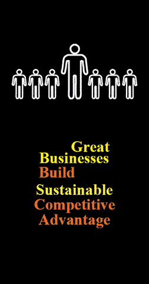

Great businesses are not here today, gone tomorrow. They are not on top of a trend for two years,
then disappear from the scene. Those are great opportunists.
Great businesses sustain success. Of course, great businesses adapt to change, ride trends, and
seek flexibility and innovation. But they also know that strong relationships, strong brand image,
dominant distribution channels, strong training emphasis, and high-quality customer service
always lead to long-term success and superior performance.
Great businesses know how to put distance between themselves and their imitator competitors.
Great businesses know how to emphasize the value of the real deal to fight the inevitable knock
-off. Great businesses know that there is no substitute for having happy, well-trained employees
who want to work for the winning team.
Great business project long-term vision and long-term commitment to quality. They value
relationships over transactions, because they know and understand the lifetime value of a
customer relationship. Great businesses invest in true creativity and innovation because they
know someone will always try to copy them in a lower-quality, lower-cost way.
Great businesses know that brand leadership increases perceived value (and revenue) and
reduces risk in customers’ minds.
Do you have a strategy for analyzing and developing sustainable competitive advantage? If not,
ask Personius & Company. We’ll be glad to help.